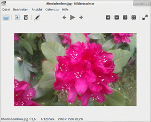
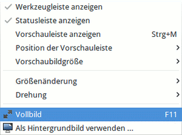

Ristretto
Dieser Artikel wurde für die folgenden Ubuntu-Versionen getestet:
Ubuntu 16.04 Xenial Xerus
Ubuntu 14.04 Trusty Tahr
Zum Verständnis dieses Artikels sind folgende Seiten hilfreich:
Ristretto  ist ein leichtgewichtiger und schneller Bildbetrachter, welcher für Xfce oder Systeme mit alternativen Fenstermanagern geeignet ist. Unter Xubuntu ist das Programm seit 12.04 vorinstalliert.
ist ein leichtgewichtiger und schneller Bildbetrachter, welcher für Xfce oder Systeme mit alternativen Fenstermanagern geeignet ist. Unter Xubuntu ist das Programm seit 12.04 vorinstalliert.
Folgende Optionen werden unterstützt:
Bildansicht
Vollbildansicht
Diashow
Ordner-Vorschau als Miniaturbilder (abschaltbar)
Eine Möglichkeit zum Drucken ist nicht vorhanden.
Installation¶
|  |
| Ristretto |
Das Programm kann über die offiziellen Paketquellen installiert [1] werden:
ristretto (universe)
 mit apturl
mit apturl
Paketliste zum Kopieren:
sudo apt-get install ristretto
sudo aptitude install ristretto
Benutzung¶
Man startet das Programm bei Ubuntu-Varianten mit einem Anwendungsmenü über den Eintrag "Grafik -> Ristretto" [2]. Ansonsten kann der Befehl ristretto verwendet werden.
Werkzeugleiste¶
Die Navigation innerhalb des Programms ist intuitiv zu erfassen. Über einen Rechtsklick  auf das betrachtete Bild sind diese Steuerelemente ebenfalls ersichtlich:
auf das betrachtete Bild sind diese Steuerelemente ebenfalls ersichtlich:
| Werkzeugleiste | |
| Element | Bedeutung |
 | Ordner öffnen |
| Navigation innerhalb des Ordners | |
 | Ansicht vergrößern |
| Ansicht verkleinern | |
| Bild an Fenstergröße anpassen | |
| Originalgröße | |
Unter "Ansicht -> Werkzeugleiste anzeigen" kann die Leiste ein- oder ausgeblendet werden.
|  |
| Menü |
Bildeigenschaften¶
Unter "Datei -> Eigenschaften" können die wichtigsten Bildeigenschaften angezeigt werden. Die Informationen sind mit denen des Dateimanagers Thunar identisch.
Miniaturbilder¶
Unter "Ansicht -> Miniaturbilder" ("Thumbnail Viewer") können weitere Anzeigeoptionen eingestellt werden:
"Horizontal anzeigen"
"Vertikal anzeigen"
"Verbergen"
Diaschau¶
Eine Diaschau wird über "Gehe zu" mittels gesteuert. Die Schnelligkeit des Bildwechsels richtet sich danach, was in den Einstellungen angegeben wurde. Die Wiedergabe muss explizit beendet werden, d.h. sie stoppt nicht beim letzten Bild, sondern beginnt wieder von vorne.
Tipps¶
Unter "Bearbeiten -> Anzeige" kann ein Vorladen (preload) der Bilder im Hintergrund aktiviert werden. Damit wird die Anzeige der Bilder deutlich beschleunigt.
Damit Bilder eines Dateityps immer mit Ristretto geöffnet werden, kann man im jeweiligen Dateimanager eine entsprechende Verknüpfung über "-> Öffnen mit..." und "Einstellung merken" einrichten.
Einstellungen¶
Es können einige Einstellungen im Programm vorgenommen werden. Das Einstellungsmenü ist über "Bearbeiten -> Einstellungen" zu erreichen. Hinter den jeweiligen Reitern gibt es nützliche Zusatzoptionen:
| Einstellungen | |
| Reiter | Konfigurationemöglichkeit |
| Anzeige | Hintergrundfarbe überschreiben (de)aktivieren |
| Diavorführung | Zeitspanne während der Bildanzeige ändern / Bilder vorladen |
| Verhalten | Skalierung steuern |
Tastenkürzel¶
| Tastenkürzel | |
| Taste(n) | Beschreibung |
| Strg + O | Ordner öffnen. |
| Alt Gr + 8 | Bild links drehen. |
| Alt Gr + 9 | Bild rechts drehen. |
| F11 | Vollbildmodus an/aus |
| Strg + W | Schließen. |
| Strg + Q | Programm beenden. |
 Übersichtsartikel
Übersichtsartikel- Erstellt mit Inyoka
-
 2004 – 2017 ubuntuusers.de • Einige Rechte vorbehalten
2004 – 2017 ubuntuusers.de • Einige Rechte vorbehalten
Lizenz • Kontakt • Datenschutz • Impressum • Serverstatus -
Serverhousing gespendet von